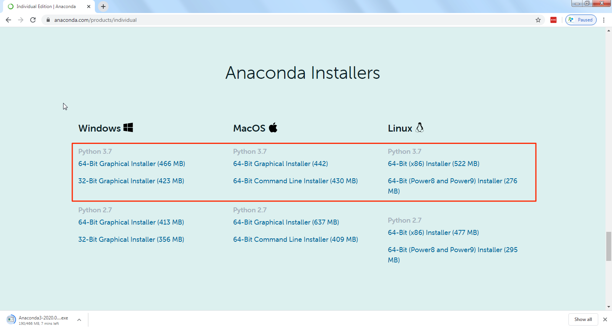
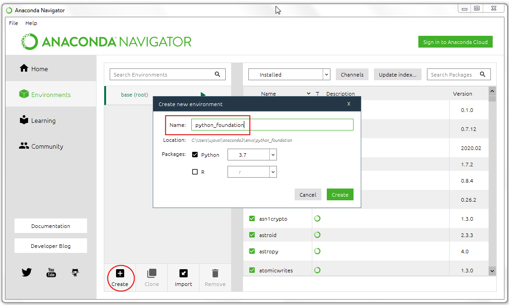
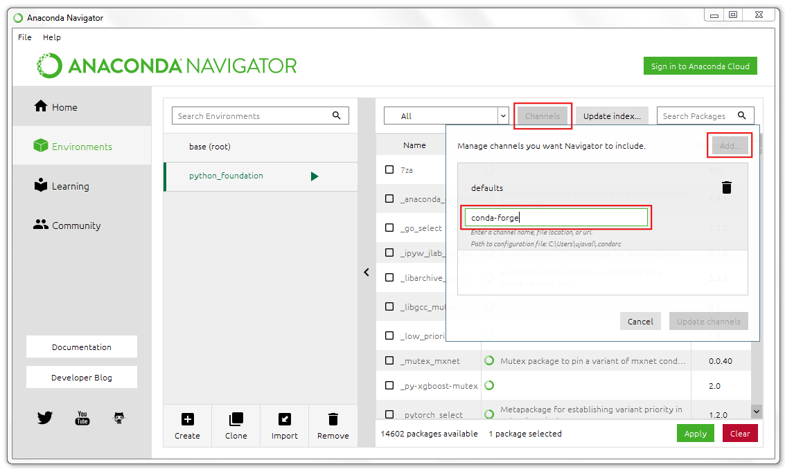
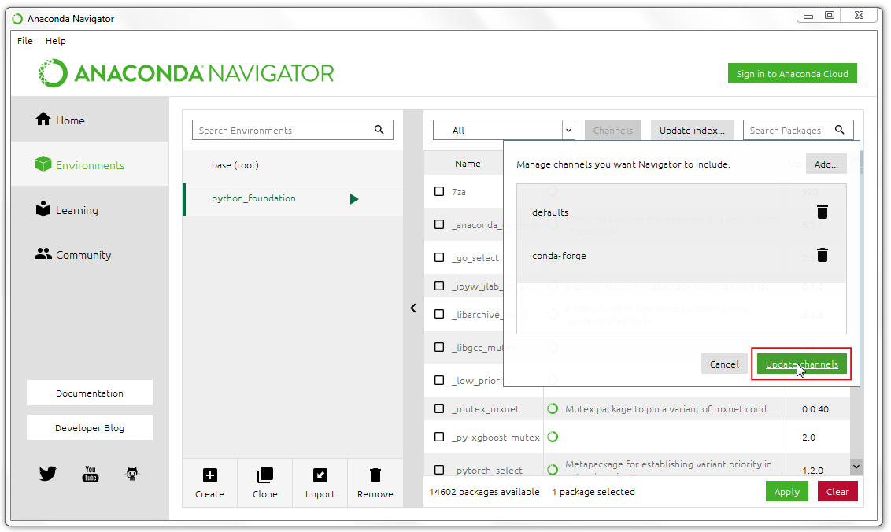
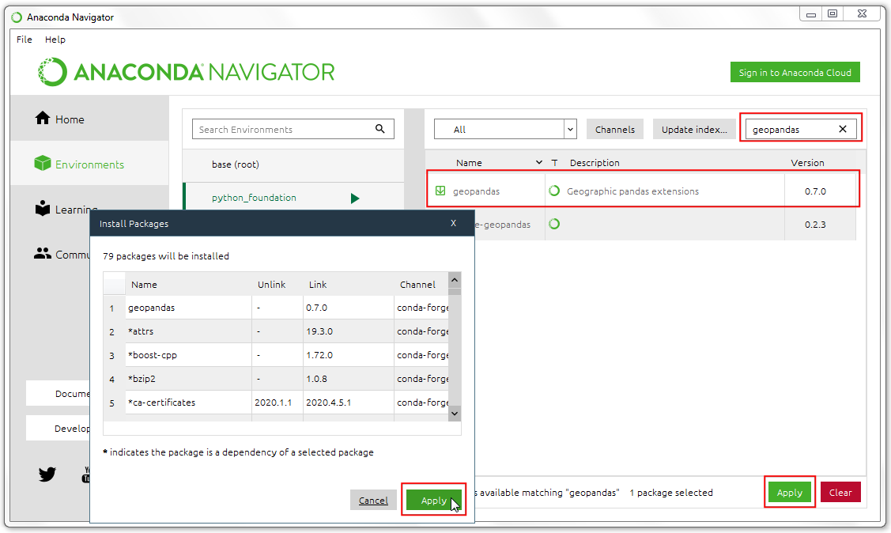
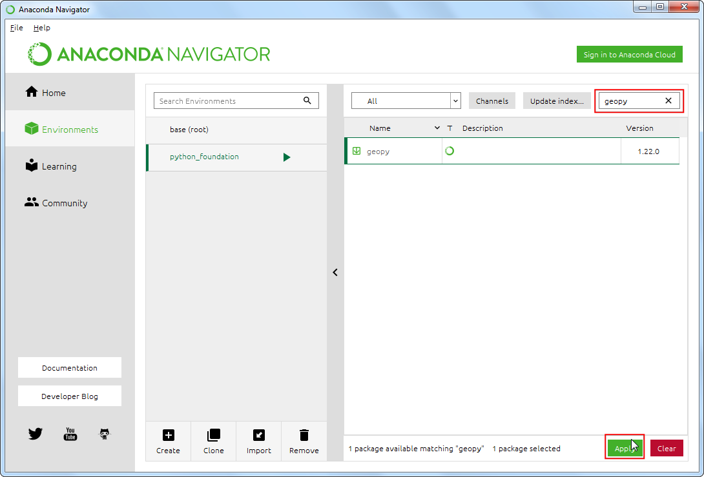
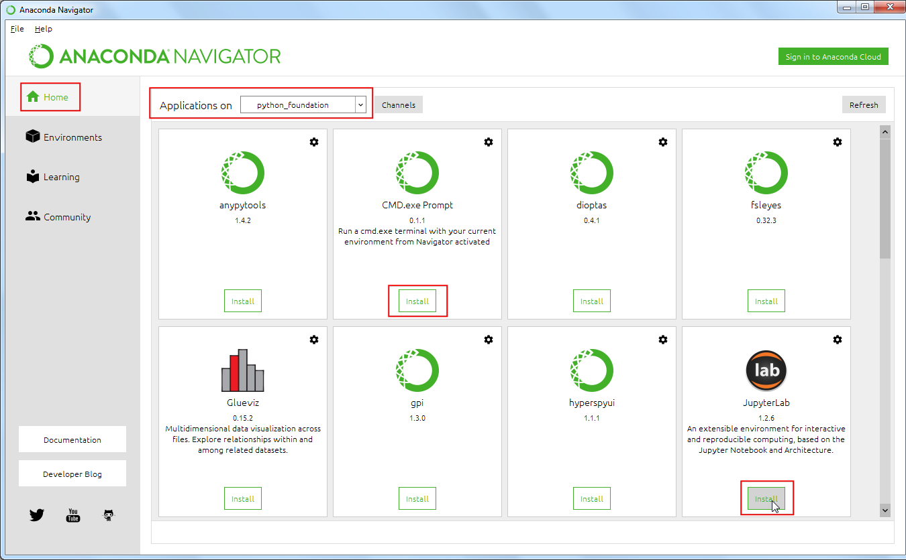
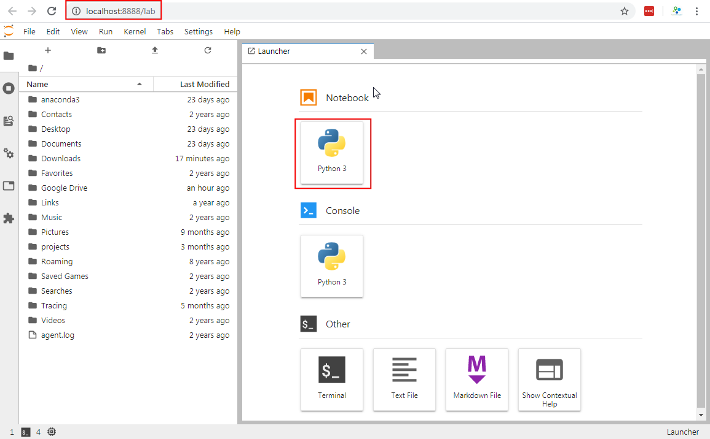
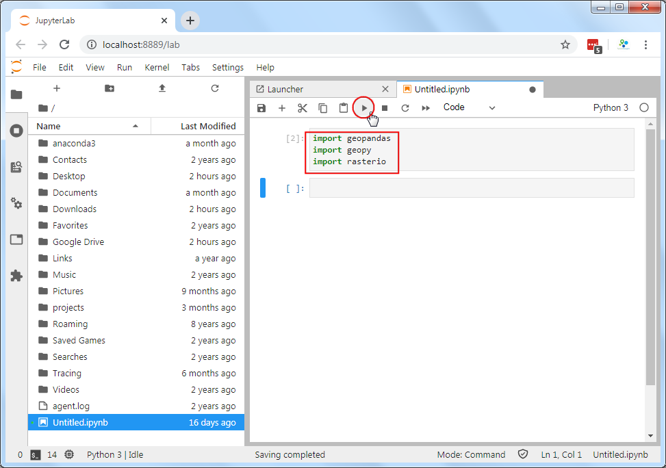

Python Foundation for Spatial Analysis (Course Material)
A gentle introduction to Python programming with a focus on spatial data.
Ujaval Gandhi
This course is also offered as an online class. Visit www.spatialthoughts.com/events to know details of upcoming sessions. You may also sign up for my mailing list to know when new sessions are scheduled.
Introduction
This class covers Python from the very basics. Suitable for GIS practitioners with no programming background or python knowledge. The course will introduce participants to basic programming concepts, libraries for spatial analysis, geospatial APIs and techniques for building spatial data processing pipelines.
Get the Data Package
The code examples in this class use a variety of datasets. All the required datasets are supplied to you in the python_foundation.zip with your purchase. Unzip this file to the Downloads directory. All code examples assume the data is available in the <home folder>/Downloads/python_foundation/ directory.
Installation and Setting up the Environment
There are many ways to install Python on your system. Many operating systems comes with a Python distribution built-in too. If you use software such as QGIS - it comes with its own version of Python. Working on Python projects typically require installing third-party packages (i.e. tools). As these pacakges have different dependencies - they often cause conflicts and errors due to different versions of Python on your system.
An easy and reliable way to get a Python installation on your system is via Anaconda. For this course, we will use the Anaconda3 Individual Edition to install Python and required spatial analysis packages.
Many Python tool names have references to the reptile world. The default Python package manager is called Pip which references the process of hatching eggs. Interestingly, the naming of the Python language itself had nothing to do with reptiles.
- Download the Anaconda Installer for Python 3.7 for your operating system. Once downloaded, double click the installer and install it into the default suggested directory. Select an install for Just Me and use default settings.
Note: Install Anaconda to a directory path that does not contain spaces or unicode characters.

- Once installed, launch the Anaconda Navigator program. It is a good practice to create a new environment for each of your Python projects. An environment is a space where you will install required packages. Many packages may contain conflicting requirements which could prevent them all being installed into a single environment. Having a separate environment isolates your project from such problems. Click on the Environments tab.

- Click the + Create button and name the environment as
python_foundation. Click Create.

- Once created, click the Channels button. A channel is a repository where packages are hosted. The default channel is good for most purposes. But some packages we require for this class are not available in the default channel, so we need to add another channel. In the Manage channels dialog, click Add and enter
conda-forge. Press Enter.
Learn more about conda-forge

- Click the Update Channels button.

- Once the update is done, search for the package
geopandas. This is a package that allows you to work with vector geospatial data in Python. Select the checkbox next to the first result and click Apply to install the package with all its dependencies.

- Similarly, search and install the following packages
geopyrasterio

- Switch to the Home tab. Ensure that you have the python_foundation environemnt selected. We will now install some programs which allow us to write and execute Python scripts. From the home screen, install the
JupyterLabandCMD.exe promptapplications. (Mac and Linux users can skip the CMD.exe prompt install).

- After the installation completes, click Launch button for the JupyterLab application. JupyterLab is a web application that allows you to write, document and run Python code. It allow you to interactively run small bits of code and see the results. It also support a variety of output formats such as charts or maps - making it an ideal platform for data science projects. We will be using Jupyter notebooks for all exercises in this course.
The name Jupyter comes from the 3 primary programming languages it supports - Julia, Python and R.

- A new browser tab will open with an instance of JupterLab. Click the Python 3 button under Notebooks.

- Enter the following statements in the first cell and click the Run button. If the code executes without any errors - your installation was successful and you are ready to start coding. If you get an ImportError, repeat the installation steps carefully again.

Hello World
When learning a new programming language, it is customary to first learn how to print ‘Hello World!’. While a bit quirky, it is a useful first step to know how to send input to the program and where to see the output. In Python, you can use the built-in print() function to print the greeting "Hello World!"
print('Hello World!')Variables
Strings
A string is a sequence of letters, numbers, and punctuation marks - or commonly known as text
In Python you can create a string by typing letters between single or double quotation marks.
city = 'San Fransico'
state = 'California'
print(city, state)San Fransico Californiaprint(city + state)San FransicoCaliforniaprint(city + ',' + state)San Fransico,CaliforniaNumbers
Python can handle several types of numbers, but the two most common are:
- int, which represents integer values like 100, and
- float, which represents numbers that have a fraction part, like 0.5
population = 881549
latitude = 37.7739
longitude = -121.5687print(type(population))<class 'int'>print(type(latitude))<class 'float'>elevation_feet = 934
elevation_meters = elevation_feet * 0.3048
print(elevation_meters)284.6832area_sqmi = 46.89
density = population / area_sqmi
print(density)18800.362550650458Exercise
We calculated the population density in number of people per square mile. Calculate and print the density in number of people per square kilometers.
- Hint1: 1 mile = 1.60934 kilometers
- Hint2: To calculate exponential of a number in Python, you use the ** notation. x² is written as x**2
Create a code cell below this one, type in the code and run the cell. The output should be 7258.8966
Data Structures
Tuples
A tuple is a sequence of objects. It can have any number of objects inside. In Python tuples are written with round brackets ().
latitude = 37.7739
longitude = -121.5687
coordinates = (latitude, longitude)
print(coordinates)(37.7739, -121.5687)You can access each item by its position, i.e. index. In programming, the counting starts from 0. So the first item has an index of 0, the second item an index of 1 and so now. The index has to be put inside square brackets [].
y = coordinates[0]
x = coordinates[1]
print(x, y)-121.5687 37.7739Lists
A list is similar to a tuple - but with a key difference. With tuples, once created, they cannot be changed, i.e. they are immutable. But lists are mutable. You can add, delete or change elements within a list. In Python, lists are written with square brackets []
cities = ['San Francisco', 'Los Angeles', 'New York', 'Atlanta']
print(cities)['San Francisco', 'Los Angeles', 'New York', 'Atlanta']You can access the elements from a list using index the same way as tuples.
print(cities[0])San FranciscoYou can call len() function with any Python object and it will calculates the size of the object.
print(len(cities))4We can add items to the list using the append() method
cities.append('Boston')
print(cities)['San Francisco', 'Los Angeles', 'New York', 'Atlanta', 'Boston']As lists are mutable, you will see that the size of the list has now changed
print(len(cities))5Another useful method for lists is sort() - which can sort the elements in a list.
cities.sort()
print(cities)['Atlanta', 'Boston', 'Los Angeles', 'New York', 'San Francisco']The default sorting is in ascending order. If we wanted to sort the list in a decending order, we can call the function with reverse=True
cities.sort(reverse=True)
print(cities)['San Francisco', 'New York', 'Los Angeles', 'Boston', 'Atlanta']Sets
Sets are like lists, but with some interesting properties. Mainly that they contain only unique values. It also allows for set operations - such as intersection, union and difference. In practice, the sets are typically created from lists.
capitals = ['Sacramento', 'Boston', 'Austin', 'Atlanta']
capitals_set = set(capitals)
cities_set = set(cities)
capital_cities = capitals_set.intersection(cities_set)
print(capital_cities){'Atlanta', 'Boston'}Sets are also useful in finding unique elements in a list. Let’s merge the two lists using the extend() method. The resulting list will have duplicate elements. Creating a set from the list removes the duplicate elements.
cities.extend(capitals)
print(cities)
print(set(cities))['San Francisco', 'New York', 'Los Angeles', 'Boston', 'Atlanta', 'Sacramento', 'Boston', 'Austin', 'Atlanta']
{'Los Angeles', 'New York', 'Sacramento', 'San Francisco', 'Austin', 'Atlanta', 'Boston'}Dictionaries
In Python dictionaries are written with curly brackets {}. Dictionaries have keys and values. With lists, we can access each element by its index. But a dictionary makes it easy to access the element by name. Keys and values are separated by a colon :.
data = {'city': 'San Francisco', 'population': 881549, 'coordinates': (-122.4194, 37.7749) }
print(data){'city': 'San Francisco', 'population': 881549, 'coordinates': (-122.4194, 37.7749)}You can access an item of a dictionary by referring to its key name, inside square brackets.
print(data['city'])San FranciscoExercise
From the dictionary below, how do you access the latitude and longitude values? print the latitude and longitude of new york city by extracting it from the dictionary below.
nyc_data = {'city': 'New York', 'population': 8175133, 'coordinates': (40.661, -73.944) }String Operations
city = 'San Francisco'
print(len(city))13print(city.split())['San', 'Francisco']print(city.upper())SAN FRANCISCOcity[0]'S'city[-1]'o'city[0:3]'San'city[4:]'Francisco'Exercise
Use the string slicing to print the last 5 characters of a string.
Escaping characters
Certain characters are special since they are by Python language itself. For example, the quote character ’ is used to define a string. What do you do if your string contains a quote character?
In Python strings, the backslash \ is a special character, also called the escape character. Prefixing any character with a backslash makes it an ordinary character. (Hint: Prefixing a backslash with a backshalsh makes it ordinary too!)
It is also used for representing certain whitespace characters, \n is a newline, \t is a tab etc.
Remove the # from the cell below and run it.
# my_string = 'It's a beautiful day!'We can fix the error by espacing the single quote within the string.
my_string = 'It\'s a beautiful day!'
print(my_string)It's a beautiful day!Alternatively, you can also use double-quotes if your string contains a single-quote.
my_string = "It's a beautiful day!"What if our string contains both single and double quotes?
We can use triple-quotes! Enclosing the string in triple quotes ensures both single and double quotes are treated correctly.
latitude = '''37° 46' 26.2992 N'''
longitude = '''122° 25' 52.6692" W'''
print(latitude, longitude)37° 46' 26.2992 N 122° 25' 52.6692" WBackslashes pose another problem when dealing with Windows paths
#path = 'C:\Users\ujaval'
#print(path)Prefixing a string with r makes is a Raw string. Which doesn’t interpret backslash as a special character
path = r'C:\Users\ujaval'
print(path)C:\Users\ujavalPrinting Strings
Modern way of creating strings from variables is using the format() method
city = 'San Fransico'
population = 881549
output = 'Population of {} is {}.'.format(city, population)
print(output)Population of San Fransico is 881549.You can also use the format method to control the precision of the numbers
latitude = 37.7749
longitude = -122.4194
coordinates = '{:.2f},{:.2f}'.format(latitude, longitude)
print(coordinates)37.77,-122.42Functions
A function is a block of code that takes one or more inputs, does some processing on them and returns one or more outputs. The code within the function runs only when it is called.
A funtion is defined using the def keyword
def my_function():
....
....
return somethingFunctions are useful because they allow us to capture the logic of our code and we can run it with differnt inputs without having to write the same code again and again.
def greet(name):
return 'Hello ' + name
print(greet('World'))Hello WorldFunctions can also take arguments with a default value. This helps make calling the functions simpler for the default behavior while giving an option to pass on extra arguments.
lat = 37.7739
lng = -121.5687
def format_coordinates(latitude, longitude, separator=','):
return '{}{}{}'.format(latitude, separator, longitude)
print(format_coordinates(lat, lng))
print(format_coordinates(lat, lng, '|'))37.7739,-121.5687
37.7739|-121.5687The default behavior of Python functions is to take positional arguments. You pass the arguments in the order that is defined by the function. Python allows functions to be called using keyword arguments. When we call functions in this way, the order (position) of the arguments can be changed. The main advantage of using keyword arguments is to make the code more readable and explicit.
print(format_coordinates(latitude=lat, longitude=lng, separator=';'))37.7739;-121.5687Exercise
Functions can take multiple arguments. Let’s write a function to convert coordinates from degrees, minutes, seconds to decimal degrees. This conversion is needed quite often when working with data collected from GPS devices.
- 1 degree is equal to 60 minutes
- 1 minute is equal to 60 seconds (3600 seconds)
To calculate decimal degrees, we can use the formula below: Decimal Degrees = degrees + (minutes/60) + (seconds/3600)
Delete the pass statement and replace it with the code for the formula. If the code is correct, you should see the result 37.773972 -121.568703
latitude = (37, 46, 26.2992)
longitude = (-122, 25, 52.6692)
def dms_to_decimal(degrees, minutes, seconds):
pass
lat_decimal = dms_to_decimal(latitude[0], latitude[1], latitude[2])
lon_decimal = dms_to_decimal(longitude[0], longitude[1], longitude[2])
print(lat_decimal, lon_decimal)None NoneThe Python Standard Library
Python comes with many built-in modules that offer ready-to-use solutions to common programming problems. To use these modules, you must use the import keyword. Once imported in your Python script, you can use the functions provided by the module in your script.
We will use the built-in math module that allows us to use advanced mathematical functions.
import mathYou can also import specific functions or constants from the module like below
from math import pi
print(pi)3.141592653589793Calculating Distance
Given 2 points with their Latitude and Longitude coordinates, the Haversine Formula calculates the straight-line distance in meters, assuming that Earth is a sphere.
The formula is simple enough to be implemented in a spreadsheet too. If you are curious, see my post about using this formula for calculating distances in a spreadsheet.
We can write a function that accepts a pair of origin and destination coordinates and computes the distance.
san_francisco = (37.7749, -122.4194)
new_york = (40.661, -73.944)def haversine_distance(origin, destination):
lat1, lon1 = origin
lat2, lon2 = destination
radius = 6371000
dlat = math.radians(lat2-lat1)
dlon = math.radians(lon2-lon1)
a = math.sin(dlat/2) * math.sin(dlat/2) + math.cos(math.radians(lat1)) \
* math.cos(math.radians(lat2)) * math.sin(dlon/2) * math.sin(dlon/2)
c = 2 * math.atan2(math.sqrt(a), math.sqrt(1-a))
distance = radius * c
return distancedistance = haversine_distance(san_francisco, new_york)
print(distance/1000, 'km')4135.374617164737 kmExercise
Find the coordinates of 2 cities near you and calculate the distance between them
# city1 = (lat1, lng1)
# city2 = (lat2, lng2)
# call the function and print the resultThird-party Modules
Python has a thriving ecosystem of third-party modules (i.e. libraries or packages) available for you to install. There are hundreds of thousands of such modules available for you to install and use.
Installing third-party libraries
Python comes with a package manager called pip. It can install all the packages listed at PyPI (Python Package Index). To install a package using pip, you need to run a command like following in a Terminal or CMD prompt.
pip install <package name>
For this course, we are using Anancoda platform - which comes with its own package manager called conda. You can use Anaconda Navigator to search and install packages. Or run the command like following in a Terminal or CMD Prompt.
conda install <package name>
See this comparison of pip and conda to understand the differences.
Calculating Distance
We have already installed the geopy package in our environment. geopy comes with functions that have already implemented many distance calculation formulae.
distance.great_circle(): Calculates the distance on a great circle using haversine formuladistance.geodesic(): Calculates the distance using a chosen ellipsoid using vincenty’s formula
from geopy import distance
san_francisco = (37.7749, -122.4194)
new_york = (40.661, -73.944)
straight_line_distance = distance.great_circle(san_francisco, new_york)
ellipsoid_distance = distance.geodesic(san_francisco, new_york, ellipsoid='WGS-84')
print(straight_line_distance, ellipsoid_distance)4135.3804590061345 km 4145.446977549562 kmExercise
Repeat the distance calculation exercise from the previous module but perform the calculation using the geopy library.
# city1 = (lat1, lng1)
# city2 = (lat2, lng2)
# call the geopy distance function and print the great circle and ellipsoid distanceLoops and Conditionals
For Loops
A for loop is used for iterating over a sequence. The sequence can be a list, a tuple, a dictionary, a set, or a string.
cities = ['San Francisco', 'Los Angeles', 'New York', 'Atlanta']
for city in cities:
print(city)San Francisco
Los Angeles
New York
AtlantaTo iterate over a dictionary, you can call the items() method on it which returns a tuple of key and value for each item.
data = {'city': 'San Francisco', 'population': 881549, 'coordinates': (-122.4194, 37.7749) }
for key, value in data.items():
print(key, value)city San Francisco
population 881549
coordinates (-122.4194, 37.7749)The built-in range() function allows you to create sequence of numbers that you can iterate over
for x in range(5):
print(x)0
1
2
3
4The range function can also take a start and an end number
for x in range(1, 10):
print(x)1
2
3
4
5
6
7
8
9Conditionals
Python supports logical conditions such as equals, not equals, greater than etc. These conditions can be used in several ways, most commonly in if statements and loops.
An if statement is written by using the if keyword.
Note: A very common error that programmers make is to use = to evaluate a equals to condition. The = in Python means assignment, not equals to. Always ensure that you use the == for an equals to condition.
for city in cities:
if city == 'Atlanta':
print(city)AtlantaYou can use else keywords along with if to match elements that do not meet the condition
for city in cities:
if city == 'Atlanta':
print(city)
else:
print('This is not Atlanta')This is not Atlanta
This is not Atlanta
This is not Atlanta
AtlantaPython relies on indentation (whitespace at the beginning of a line) to define scope in the for loop and if statements. So make sure your code is properly indented.
You can evaluate a series of conditions using the elif keyword.
Multiple criteria can be combined using the and and or keywords.
cities_population = {
'San Francisco': 881549,
'Los Angeles': 3792621,
'New York': 8175133,
'Atlanta':498044
}
for city, population in cities_population.items():
if population < 1000000:
print('{} is a small city'.format(city))
elif population > 1000000 and population < 5000000:
print('{} is a big city'.format(city))
else:
print('{} is a mega city'.format(city))San Francisco is a small city
Los Angeles is a big city
New York is a mega city
Atlanta is a small cityControl Statements
A for-loop iterates over each item in the sequence. Sometimes is desirable to stop the execution, or skip certain parts of the for-loops. Python has special statements, break, continue and pass.
A break statement will stop the loop and exit out of it
for city in cities:
print(city)
if city == 'Los Angeles':
print('I found Los Angeles')
breakSan Francisco
Los Angeles
I found Los AngelesA continue statement will skip the remaining part of the loop and go to the next iteration
for city in cities:
if city == 'Los Angeles':
continue
print(city)San Francisco
New York
AtlantaA pass statement doesn’t do anything. It is useful when some code is required to complete the syntax, but you do not want any code to execute. It is typically used as a placeholder when a function is not complete.
for city in cities:
if city == 'Los Angeles':
pass
else:
print(city)Exercise
The Fizz Buzz challenge.
Write a program that prints the numbers from 1 to 100 and for multiples of 3 print Fizz instead of the number and for the multiples of 5 print Buzz. If it is divisible by both, print FizzBuzz.
So the output should be something like below
1, 2, Fizz, 4, Buzz, Fizz, 7, 8, Fizz, Buzz, 11, Fizz, 13, 14, ...
Breaking down the problem further, we need to create for-loop with following conditions
- If the number is a multiple of both 3 and 5 (i.e. 15), print FizzBuzz
- If the number is multiple of 3, print Fizz
- If the number is multiple of 5, print Buzz
- Otherwise print the number
Hint: Use the modulus operator % to check if a number is divisible by another. 10 % 5 is 0, meaning it is divisible by 5.
Reading Files
Python provides built-in functions for reading and writing files.
To read a file, we must know the path of the file on the disk. Python has a module called os that has helper functions that helps dealing with the the operating system. Advantage of using the os module is that the code you write will work without change on any suppored operating systems.
We can use the os module to find the path to your home folder using the os.path.expanduser() method. The symbol ~ refers to the home directory for the user.
import oshome_dir = os.path.expanduser('~')
print(home_dir)/Users/ujavalTo open a file, we need to know the full path to the file. We will now open and read the file worldcitites.csv located in your data package. Assuming the data package is extracted to the Downloads/ directory. We can construct the full path to the file using the os.path.join() method.
data_pkg_path = 'Downloads/python_foundation/'
filename = 'worldcities.csv'
path = os.path.join(home_dir, data_pkg_path, filename)
print(path)/Users/ujaval/Downloads/python_foundation/worldcities.csvTo open the file, use the built-in open() function. We specify the mode as r which means read-only. If we wanted to change the file contents or write a new file, we would open it with w mode.
The open() function returns a file object. We can call the readline() method for reading the content of the file, one line at a time.
It is a good practice to always close the file when you are done with it. To close the file, we must call the close() method on the file object.
f = open(path, 'r')
print(f.readline())
print(f.readline())
f.close()"city","city_ascii","lat","lng","country","iso2","iso3","admin_name","capital","population","id"
"Tokyo","Tokyo","35.6850","139.7514","Japan","JP","JPN","Tōkyō","primary","35676000","1392685764"Calling readline() for each line of the file is tedious. Ideally, we want to loop through all the lines in file. You can iterate through the file object like below.
We can loop through each line of the file and increase the count variable by 1 for each iteration of the loop. At the end, the count variable’s value will be equal to the number of lines in the file.
f = open(path, 'r')
count = 0
for line in f:
count += 1
f.close()
print(count)15494Exercise
Print first 5 lines of the file.
- Hint: Use break statement
Reading CSV Files
Comma-separated Values (CSV) are the most common text-based file format for sharing geospatial data. The structure of the file is 1 data record per line, with individual columns separated by a comma.
In general, the separator character is called a delimiter. Other popular delimiters include the tab (\t), colon (:) and semi-colon (;) characters.
Reading CSV file properly requires us to know which delimiter is being used, along with quote character to surround the field values that contain space of the delimiter character. Since reading delimited text file is a very common operation, and can be tricky to handle all the corner cases, Python comes with its own library called csv for easy reading and writing of CSV files. To use it, you just have to import it.
import csvThe preferred way to read CSV files is using the DictReader() method. Which directly reads each row and creates a dictionary from it - with column names as key and column values as value. Let’s see how to read a file using the csv.DictReader() method.
import os
home_dir = os.path.expanduser('~')
data_pkg_path = 'Downloads/python_foundation/'
filename = 'worldcities.csv'
path = os.path.join(home_dir, data_pkg_path, filename)f = open(path, 'r')
csv_reader = csv.DictReader(f, delimiter=',', quotechar='"')
print(csv_reader)
f.close()<csv.DictReader object at 0x10dfcee90>Using enumerate() function
When iterating over an object, many times we need a counter. We saw in the previous example, how to use a variable like count and increase it with every iteration. There is an easy way to do this using the built-in enumerate() function.
cities = ['San Francisco', 'Los Angeles', 'New York', 'Atlanta']
for x in enumerate(cities):
print(x)(0, 'San Francisco')
(1, 'Los Angeles')
(2, 'New York')
(3, 'Atlanta')We can use enumerate() on any iterable object and get a tuple with an index and the iterable value with each iteration. Let’s use it to print the first 5 lines from the DictReader object.
f = open(path, 'r')
csv_reader = csv.DictReader(f, delimiter=',', quotechar='"')
for index, row in enumerate(csv_reader):
print(row)
if index == 4:
break
f.close()OrderedDict([('city', 'Tokyo'), ('city_ascii', 'Tokyo'), ('lat', '35.6850'), ('lng', '139.7514'), ('country', 'Japan'), ('iso2', 'JP'), ('iso3', 'JPN'), ('admin_name', 'Tōkyō'), ('capital', 'primary'), ('population', '35676000'), ('id', '1392685764')])
OrderedDict([('city', 'New York'), ('city_ascii', 'New York'), ('lat', '40.6943'), ('lng', '-73.9249'), ('country', 'United States'), ('iso2', 'US'), ('iso3', 'USA'), ('admin_name', 'New York'), ('capital', ''), ('population', '19354922.0'), ('id', '1840034016')])
OrderedDict([('city', 'Mexico City'), ('city_ascii', 'Mexico City'), ('lat', '19.4424'), ('lng', '-99.1310'), ('country', 'Mexico'), ('iso2', 'MX'), ('iso3', 'MEX'), ('admin_name', 'Ciudad de México'), ('capital', 'primary'), ('population', '19028000'), ('id', '1484247881')])
OrderedDict([('city', 'Mumbai'), ('city_ascii', 'Mumbai'), ('lat', '19.0170'), ('lng', '72.8570'), ('country', 'India'), ('iso2', 'IN'), ('iso3', 'IND'), ('admin_name', 'Mahārāshtra'), ('capital', 'admin'), ('population', '18978000'), ('id', '1356226629')])
OrderedDict([('city', 'São Paulo'), ('city_ascii', 'Sao Paulo'), ('lat', '-23.5587'), ('lng', '-46.6250'), ('country', 'Brazil'), ('iso2', 'BR'), ('iso3', 'BRA'), ('admin_name', 'São Paulo'), ('capital', 'admin'), ('population', '18845000'), ('id', '1076532519')])Using with statement
The code for file handling requires we open a file, do something with the file object and then close the file. That is tedious and it is possible that you may forget to call close() on the file. If the code for processing encounters an error the file is not closed property, it may result in bugs - especially when writing files.
The preferred way to work with file objects is using the with statement. It results in simpler and cleaer code - which also ensures file objects are closed properly in case of errors.
As you see below, we open the file and use the file object f in a with statement. Python takes care of closing the file when the execution of code within the statement is complete.
with open(path, 'r') as f:
csv_reader = csv.DictReader(f)Filtering rows
We can use conditional statement while iterating over the rows, to select and process rows that meet certain criterial. Let’s count how many cities from a particular country are present in the file.
Replace the home_country variable with your home country below.
home_country = 'India'
num_cities = 0
with open(path, 'r') as f:
csv_reader = csv.DictReader(f)
for row in csv_reader:
if row['country'] == home_country:
num_cities += 1
print(num_cities)212Calculating distance
Let’s apply the skills we have learnt so far to solve a complete problem. We want to read the worldcities.csv file, find all cities within a home country, calculate the distance to each cities from a home city and write the results to a new CSV file.
First we find the coordinates of the out selected home_city from the file. Replace the home_city below with your hometown or a large city within your country. Note that we are using the city_ascii field for city name comparison, so make sure the home_city variable contains the ASCII version of the city name.
home_city = 'Bengaluru'
home_city_coordinates = ()
with open(path, 'r') as f:
csv_reader = csv.DictReader(f)
for row in csv_reader:
if row['city_ascii'] == home_city:
lat = row['lat']
lng = row['lng']
home_city_coordinates = (lat, lng)
break
print(home_city_coordinates)('12.9700', '77.5600')Now we can loop through the file, find a city in the chosen home country and call the geopy.distance.geodesic() function to calculate the distance. In the code below, we are just computing first 5 matches.
from geopy import distance
counter = 0
with open(path, 'r') as f:
csv_reader = csv.DictReader(f)
for row in csv_reader:
if (row['country'] == home_country and
row['city_ascii'] != home_city):
city_coordinates = (row['lat'], row['lng'])
city_distance = distance.geodesic(
city_coordinates, home_city_coordinates).km
print(row['city_ascii'], city_distance)
counter += 1
if counter == 5:
break
Mumbai 837.1857087990928
Delhi 1738.638855782645
Kolkata 1552.6378233436674
Chennai 295.3401073046679
Hyderabad 500.0477286304823Writing files
Instead of printing the results, let’s write the results to a new file. Similar to csv.DictReader(), there is a companion csv.DictWriter() method to write files. We create a csv_writer object and then write rows to it using the writerow() method.
output_filename = 'cities_distance.csv'
output_dir = 'Downloads'
output_path = os.path.join(home_dir, output_dir, output_filename)
with open(output_path, mode='w') as output_file:
fieldnames = ['city', 'distance_from_home']
csv_writer = csv.DictWriter(output_file, fieldnames=fieldnames)
csv_writer.writeheader()
# Now we read the input file, calculate distance and
# write a row to the output
with open(path, 'r') as f:
csv_reader = csv.DictReader(f)
for row in csv_reader:
if (row['country'] == home_country and
row['city_ascii'] != home_city):
city_coordinates = (row['lat'], row['lng'])
city_distance = distance.geodesic(
city_coordinates, home_city_coordinates).km
csv_writer.writerow(
{'city': row['city_ascii'],
'distance_from_home': city_distance}
)Below is the complete code for our task of reading a file, filtering it, calculating distance and writing the results to a file.
import os
from geopy import distance
home_dir = os.path.expanduser('~')
input_filename = 'worldcities.csv'
input_dir = 'Downloads/python_foundation/'
input_path = os.path.join(home_dir, data_pkg_path, filename)
output_filename = 'cities_distance.csv'
output_dir = 'Downloads'
output_path = os.path.join(home_dir, output_dir, output_filename)
home_city = 'Bengaluru'
home_country = 'India'
with open(input_path, 'r') as input_file:
csv_reader = csv.DictReader(input_file)
for row in csv_reader:
if row['city_ascii'] == home_city:
home_city_coordinates = (row['lat'], row['lng'])
break
with open(output_path, mode='w') as output_file:
fieldnames = ['city', 'distance_from_home']
csv_writer = csv.DictWriter(output_file, fieldnames=fieldnames)
csv_writer.writeheader()
with open(input_path, 'r') as input_file:
csv_reader = csv.DictReader(input_file)
for row in csv_reader:
if (row['country'] == home_country and
row['city_ascii'] != home_city):
city_coordinates = (row['lat'], row['lng'])
city_distance = distance.geodesic(
city_coordinates, home_city_coordinates).km
csv_writer.writerow(
{'city': row['city_ascii'],
'distance_from_home': city_distance}
)
print('Successfully written output file at {}'.format(output_path))Successfully written output file at /Users/ujaval/Downloads/cities_distance.csvExercise
Let’s say we want to repeat the same process for another city. Or maybe all the cities in a country. The code above would require us to change the home_city, home_country and output_filename variables for the new city and run the code again manually.
Instead, we can create a function that does the operation based on given city name.
def write_distance_file(home_city, home_country, output_filename):
....
....
print('Successfully written output file at {}'.format(output_path))Then we can call the function like below
write_distance_file('Frankfurt', 'Germany', 'frankfurt_distance.csv')
write_distance_file('New York', 'United States', 'nyc_distance.csv')Insert a new code cell below and create the write_distance_file function below. Then call it to create the output file as show.
License
This course material is licensed under a Creative Commons Attribution-NonCommercial 4.0 International License. You are free to use the material for any non-commercial purpose. Kindly give appropriate credit to the original author
If you would like to use this material for commercial use or for teaching a course, kindly contact me for terms.
© 2020 Ujaval Gandhi www.spatialthoughts.com